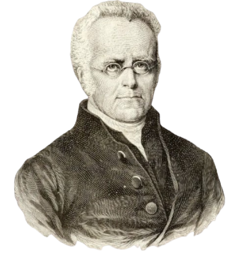

Henry arrived in the Bay of Islands on 3rd of August, 1823 as an Anglican priest.
In June 1826, he preached the gospel to local Māori near Mount Maunganui which was positively received by the local iwi.
3 Church Missionary Society (CMS) stations had already been established by 1823 in the Bay of Islands where Williams took over the leadership of the society's operation.
Instead of following Samuel Marsden's beliefs of devoting time to teach Maori 'useful arts and agriculture', he reorgnaised the mission to prioritise spiritual teaching.
Henry Williams help with the early start of the translation of the Bible, though his brother, William Williams later took over the main translation of it.
By 1844, Henry alone had baptised over 1000 Maori in the southern Bay of Islands area.
Te Rongopai (the good news of peace with God and with enemies) was a signficantly relevant message in the 1820s-30s. Christian forgiveness meant that utu was no longer necssary. As a peacemaker, Williams strongly emphasised this and often worked with chiefs to implement this peace agreement.
In April 1833, 5 Ngati Porou women and 7 men arrived in the Bay of Islands on the whaler 'Elizabeth' and were eventually delivered to Ngapuhi chiefs to become slaves. Henry Williams was one of the people who persuaded the Ngapuhi to give up the slaves and let them go. Though an attempt to return them on the schooner 'Active' was made, they ultimately defeated that attempt.
To add to how Williams followed the CMS mission's early philosophy of “civilize before Christianize”, he immediately banned CMS involvment in trading muskets with Māori (they were forced)—prioritizing spiritual integrity. In 1826, the launch of the 50 ton schooner Herald was what really made the mission independent of local influences. This showed natives about the Christian attitude and mindset at the time.
By 1840, he believed that British intervention was necessary in order to protect Māori from dishonest land deals and lawless European settlers. When presenting the Treaty to the chiefs, he explain how it did not solely serve as a poltical document, but as a spiritual covenant (kawenata) that would guarantee their protection and rights. Actions like these were able to 'plant seeds of faith' within the chiefs.
ENCOUNTER WITH A POWERFUL CHIEF
In January 1824, Toitapu—a powerful tohunga priest/seer—challenged Williams through traditional spiritual challenges and curses. And instead of reacting with agression and force, Williams stood his ground and gained respect and acceptance as a chief. Overtime, the relationship between Toitapu and Williams grew, leading to Toitapu's slow shift from his former practises, aligining more to missionary goals; however, he didn't fully convert it into European terms.
EFFECTIVENESS OF MISSION
The effectiveness of the mission was subsequently due to multiple factors. With the support from his brother—William Williams—who was language expert, Williams was able to focus in preaching the Word in Te Reo which lead to the great task of making Māori a written language (it was only spoken) and translating the word. As a result, all teaching of Māori was in Te Reo and therefore was a more effective way to spread the word to all Māori.
SPREAD OF MĀORI FAITH
In 1838, Henry Williams set 6 Christian natives to Waiapu and Turanga to teach others how to read, pray, and of hymms. By the 1840s, native teachers were able to extend the Gospel out to Wairoa, Taupo, and beyond, which resulted to self-supporting churchs and endowments for Māori clergy without the direct assistance of the missionaries. Because of Henry's decisions, Maori faith was able to expand and more natives had access to the Gospel.
CHALLENGE TO THE CONCEPT OF UTU
*(a foundation Maori concept, often manifested as generational revenge warfare)
Williams would demonstrate 'Mana' (spiritual authority, prestige, and power) especially evident in the Musket Wars of 1820s-30s where he would fearlessly walk into active battlefields unarmed or stand his ground against powerful tohunga (spiritual leaders) and demand utu. Had he not attempted to demonstrate mana, his Christian mission to spread the Gospel and abandon utu would have been dismissed.
In combination to the above, this allowed him to work with chiefs to weave the Christian Gospel of forgiveness with traditional tikanga (customary practise) of mediated peace. Gradually, this drastically altered the rules of engagement in warfare impacting Māori communities as they began declaring church grounds sacred and refusing to kill unarmed or wounded combatants.